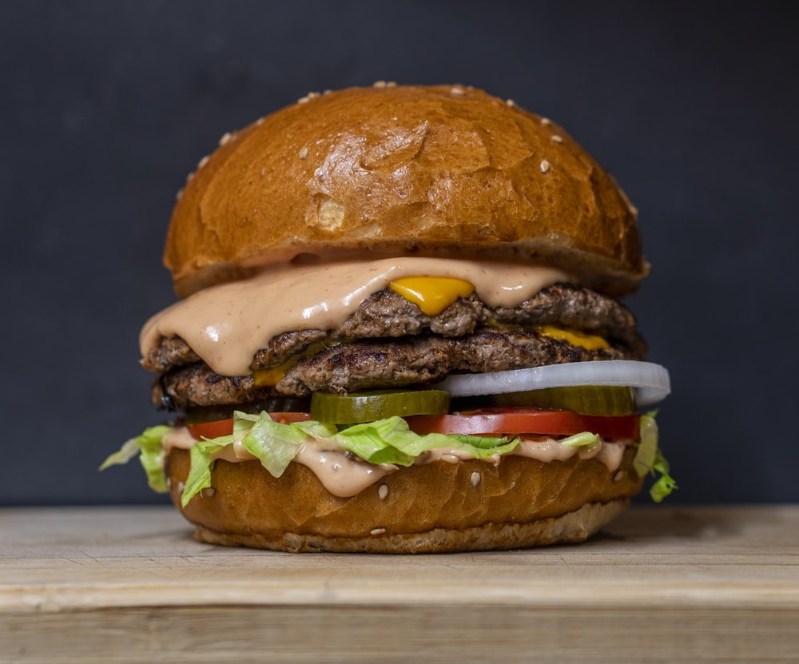

BURGER

HOME
DESCRIPTION
A flavourful moist patty sandwiched between soft
toasted buns with vibrant freshness from sliced cucumbers, tomatoes, lettuce, onion
and a bright mayo dressing or any other kinds of sauces.
INGREDIENTS
- potatoe patty
- buns
- tomatoes
- onions
- cucumber
- lettuce
- preffered sauces
STEPS
- Take your potatoe patty and fry it
- Make sure your buns are cut
- Cut your vegetables into an appropiate sizes according to you
- Take the bottom bun and spread your first layer of sauce on it
- Put a layer of onion and lettuce
- Drop the patty with a bit of seasoning
- Add your second layer of sauce on the patty
- Put the rest of the vegetables i.e. cucumber and tomatoes
- Finally close your masterpiece with the top bun